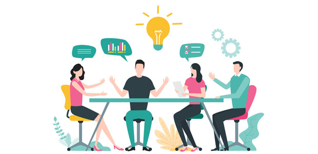

Team Working

Teamwork skill involves the ability to work effectively and harmoniously with others to achieve a common goal. Here's a general description of this skill:
- Communication: The ability to clearly share ideas, information, and concerns is essential for teamwork. This can involve verbal, written,
and non-verbal communication.
- Collaboration: Working in a team requires the ability to collaborate with others, which may involve sharing responsibilities,
helping each other, and contributing positively to the team.
- Problem Solving: eams often need to solve problems together. This can involve the ability to think creatively, negotiate compromises, and make group decisions.
- Flexibility: Team members need to be able to adapt to changes, whether it's new challenges, role changes, or new team dynamics.
- Reliability: Being a reliable team member means meeting deadlines, accomplishing assigned tasks, and being present and engaged in team meetings.
- Conflict Management: Conflicts can arise in any team. Managing conflicts in a productive way is an important skill to maintain a positive team dynamic.
In summary, teamwork is a multi-dimensional skill that involves communication, collaboration, problem-solving, flexibility, reliability, and conflict management.